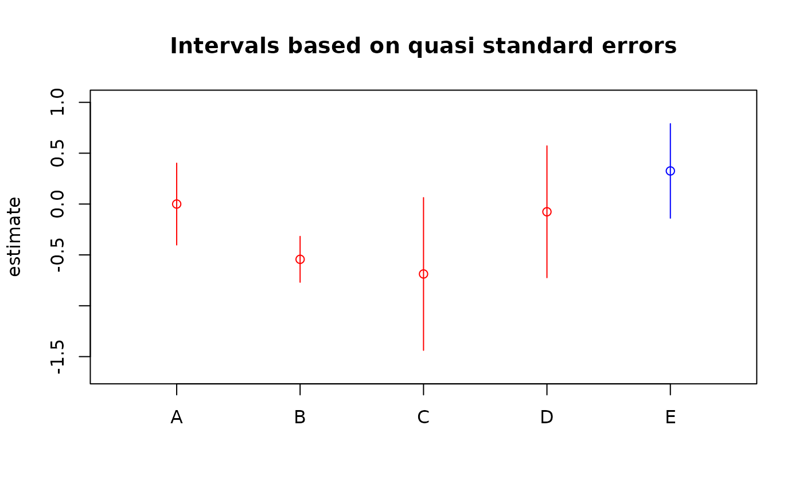

Provides visualization of estimated contrasts using intervals based on quasi standard errors.
Usage
# S3 method for class 'qv'
plot(
x,
intervalWidth = 2,
ylab = "estimate",
xlab = "",
ylim = NULL,
main = "Intervals based on quasi standard errors",
levelNames = NULL,
...
)Arguments
- x
an object of class
"qv", typically the result of callingqvcalc- intervalWidth
the half-width, in quasi standard errors, of the plotted intervals
- ylab
as for
plot.default- xlab
as for
plot.default- ylim
as for
plot.default- main
as for
plot.default- levelNames
labels to be used on the x axis for the levels of the factor whose effect is plotted
- ...
other arguments understood by
plot
References
Easton, D. F, Peto, J. and Babiker, A. G. A. G. (1991) Floating absolute risk: an alternative to relative risk in survival and case-control analysis avoiding an arbitrary reference group. Statistics in Medicine 10, 1025–1035.
Firth, D. (2000) Quasi-variances in Xlisp-Stat and on the web. Journal of Statistical Software 5.4, 1–13. doi:10.18637/jss.v005.i04
Firth, D. (2003) Overcoming the reference category problem in the presentation of statistical models. Sociological Methodology 33, 1–18. doi:10.1111/j.0081-1750.2003.t01-1-00125.x
Firth, D. and Mezezes, R. X. de (2004) Quasi-variances. Biometrika 91, 65–80. doi:10.1093/biomet/91.1.65
McCullagh, P. and Nelder, J. A. (1989) Generalized Linear Models. London: Chapman and Hall.
Menezes, R. X. (1999) More useful standard errors for group and factor effects in generalized linear models. D.Phil. Thesis, Department of Statistics, University of Oxford.
Author
David Firth, d.firth@warwick.ac.uk
Examples
## Overdispersed Poisson loglinear model for ship damage data
## from McCullagh and Nelder (1989), Sec 6.3.2
library(MASS)
data(ships)
ships$year <- as.factor(ships$year)
ships$period <- as.factor(ships$period)
shipmodel <- glm(formula = incidents ~ type + year + period,
family = quasipoisson,
data = ships, subset = (service > 0), offset = log(service))
qvs <- qvcalc(shipmodel, "type")
summary(qvs, digits = 4)
#> Model call: glm(formula = incidents ~ type + year + period, family = quasipoisson, data = ships, subset = (service > 0), offset = log(service))
#> Factor name: type
#> estimate SE quasiSE quasiVar
#> A 0.00000 0.0000 0.2010 0.04039
#> B -0.54334 0.2309 0.1127 0.01270
#> C -0.68740 0.4279 0.3753 0.14081
#> D -0.07596 0.3779 0.3239 0.10491
#> E 0.32558 0.3067 0.2322 0.05390
#> Worst relative errors in SEs of simple contrasts (%): -0.7 0.9
#> Worst relative errors over *all* contrasts (%): -2.1 1.6
plot(qvs, col = c(rep("red", 4), "blue"))

## if we want to plot in decreasing order (of estimates):
est <- qvs$qvframe$estimate
qvs2 <- qvs
qvs2$qvframe <- qvs$qvframe[order(est, decreasing = TRUE), , drop = FALSE]
plot(qvs2)